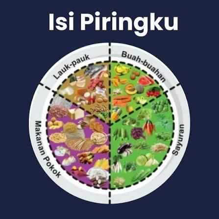

Kalkulator BMI
Kategori BMI mengacu pada klasifikasi Asia-Pasifik (Kemenkes RI).
Hitung BMI, atur piringmu, dan susun jadwal bergerak.
Kategori BMI mengacu pada klasifikasi Asia-Pasifik (Kemenkes RI).

50% buah & sayur, 50% karbohidrat & lauk pauk. Tambahkan air putih.
Panduan Isi Piringku, Kemenkes RI.
WHO Guidelines on Physical Activity and Sedentary Behaviour.
| Hari | Menu | Aktivitas |
|---|---|---|
| Senin | Nasi, ikan, tumis sayur, pisang | Jalan cepat 30′ |
| Rabu | Tempe, sayur sop, jeruk | Jogging 30′ |
| Jumat | Ayam panggang, salad, apel | Bersepeda 40′ |
| Minggu | Telur, gado-gado, semangka | Olahraga santai bareng teman |